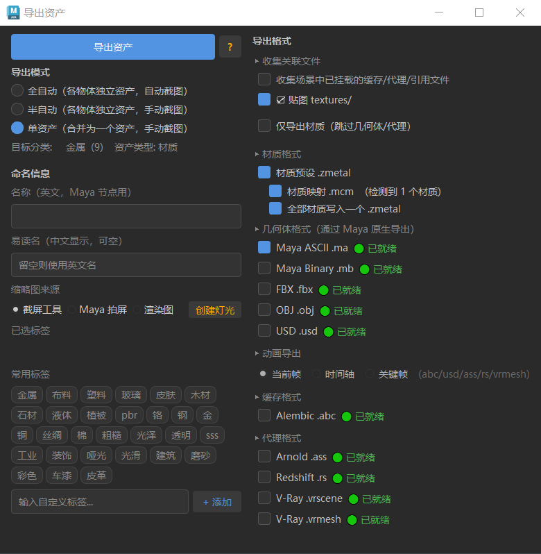

导出资产 — 界面说明
界面总览

导出对话框（780×760）分左右两列：左控制流程，右配置内容。
左侧面板 — 导出控制
导出资产（蓝色按钮）
点击后开始导出。对话框非模态，导出时可操作其他 UI。
点击后开始导出。对话框非模态，导出时可操作其他 UI。
导出模式（三个单选按钮）
| 选项 | 说明 |
|---|---|
| 全自动 | 多物体时每个独立导出。首次取景后自动复用，全程无需手动截图 |
| 半自动 | 每个物体独立导出，每个弹出截图 UI 供手动调整视角 |
| 单资产 | 无论选中多少物体，全部合并为一个资产。不会自动隐藏未选中物体，由用户手动隔离 |
缩略图来源（三个单选按钮）
| 选项 | 速度 | 适用 |
|---|---|---|
| 截屏工具 | 最快 | 视口截图，适合大多数资产 |
| Maya 拍屏 | 较快 | playblast，适合动画预览 |
| 渲染图 | 最慢 | Arnold 渲染，质量最高 |
截图延迟（仅全自动模式）
0~60 秒。每资产导出后等 N 秒再截图。0 = 无延迟。
0~60 秒。每资产导出后等 N 秒再截图。0 = 无延迟。
右侧面板 — 导出内容
收集关联文件
收集场景中已挂载的缓存/代理/引用文件 — 勾选后自动扫描选中物体关联的缓存（Alembic/gpuCache/nCache）、代理（Arnold/V-Ray/Redshift/USD）和 Maya 引用文件，复制到
associated/ 目录。勾选后，V-Ray .vrmesh/.vrscene、 Redshift .rs 和 USD .usd 代理文件无需重新导出，直接从磁盘拷贝，速度极快。
贴图 textures/ — 默认勾选，将材质关联的贴图文件收集到
textures/ 目录。取消勾选则不打包贴图，适用于纯几何体导出或贴图由外部管理的情况。仅导出材质（跳过几何体/代理） — 勾选后只导出材质节点和贴图，不会导出几何体格式和代理格式。
资产名称 — 输入框，默认选中物体名。资产以
{名称}.zasset 存入分类文件夹。中文名称 — 可选。UI 中显示友好中文名。
标签 — 逗号分隔（如
金属, 高光）。用于搜索和筛选。名称、中文名称、标签也会更新导入到该分类下已有同名资产时的新名称和标签。
材质 / 节点格式
材质预设 .zmetal — 勾选后导出 Maya 材质节点数据。多材质可选"合并"或分别导出。
灯光预设 .zlight — 勾选后导出渲染器无关的灯光数据（颜色/强度/曝光/色温 + 上游贴图/IES/HDR 节点网络）。导入时可选 Arnold / V-Ray / Redshift / Maya 原生，自动创建对应灯光节点。同一份 .zlight 可跨渲染器使用。
材质映射 .mcm — 记录物体顶点/面/边数，用于导入时自动匹配模型。仅在勾选 .zmetal 时可用。
几何体格式
| 格式 | 扩展名 | 说明 |
|---|---|---|
| Maya ASCII | .ma | Maya 原生，可读文本。引用对象保持引用关系不烘焙 |
| Maya Binary | .mb | Maya 原生，二进制。引用对象保持引用关系不烘焙 |
| FBX | .fbx | 通用交换格式 |
| OBJ | .obj | 经典多边形格式 |
| USD | .usd | Pixar 通用场景描述 |
动画导出
决定 abc/usd/ass/rs/vrmesh 的帧范围：
- 当前帧 — 静帧资产
- 时间轴 — 完整动画（播放范围）。同时触发 MP4 动态缩略图生成
- 关键帧 — 物体的关键帧范围
时间轴 + 渲染图：渲染在资产导出后统一执行。Maya 会暂时无响应——正常渲染，请等待。
缓存格式
Alembic (.abc) — 动画缓存，支持顶点动画和时间轴导出。
代理格式
| 格式 | 扩展名 | 渲染器 |
|---|---|---|
| Arnold | .ass | Arnold |
| Redshift | .rs | Redshift |
| V-Ray Scene | .vrscene | V-Ray |
| V-Ray Mesh | .vrmesh | V-Ray |
完整导出流程
- Maya 场景中选中要导出的物体
- 点击工具栏导出按钮
- 选择导出模式和缩略图来源
- 勾选「收集关联文件」可自动打包场景中的缓存/代理/引用文件
- 右侧配置导出内容（几何/缓存/代理格式）
- 需动画导出选"时间轴"或"关键帧"
- 输入资产名称和标签
- 点击"导出资产"
- 按提示截图
- 导出完成，资产出现在网格中
缩略图生成时机：截屏工具在截图 UI 中立即生成；拍屏/渲染图在所有资产导出后统一生成，不中断几何体导出。
单资产导出：单资产模式下不会自动隐藏未选中物体，如需隔离视图请手动操作（按 Shift+I 独显），截图后再恢复。
关联文件收集详情
勾选「收集关联文件」后，系统自动扫描选中物体的关联节点并收集文件到 associated/ 目录。
支持的节点与格式
| 节点类型 | 格式 | 收集内容 |
|---|---|---|
| AlembicNode | .abc | Alembic 缓存文件 |
| gpuCache | .gpu | GPU 缓存文件 |
| cacheFile | .mc/.xml/.abc | nCache 文件 |
| VRayVolumeGrid | .vdb | V-Ray VDB 体积文件（支持 # 帧序列） |
| aiVolume | .vdb | Arnold VDB 体积文件 |
| RedshiftVolumeShape | .vdb | Redshift VDB 体积文件 |
| aiStandIn | .ass | Arnold 代理文件 |
| VRayProxy | .vrmesh | V-Ray 旧版代理 |
| VRayMesh | .vrmesh | V-Ray 5+ 代理 |
| VRayScene | .vrscene | V-Ray 场景代理 |
| RedshiftProxyMesh | .rs | Redshift 代理（支持 #### 帧序列） |
| mayaUsdProxyShape | .usd/.usda/.usdc | USD 场景代理 |
| reference | .ma/.mb | Maya 引用文件 |
帧序列处理
以下格式自动识别帧序列并逐帧复制全部文件：
- RedshiftProxyMesh —
####格式（如pPlatonic1_####.rs） - VRayVolumeGrid —
#格式（如Aerial explosion_#.vdb）
.zasset 输出结构
MyAsset.zasset/
├── meta.json
├── node.ma
├── node.zmetal
├── node.zlight ← 灯光预设（灯光分类专属）
├── textures/
│ └── MatName/
│ └── diffuse.png
├── associated/ ← 收集关联（可选）
│ ├── caches/
│ ├── proxies/
│ └── references/
└── thumb.siconLOD 与版本管理
概念
LOD（精度级别）和版本是两个核心变体维度，LOD 从属于版本：
- 版本 — 同一资产的内容迭代（v1=基础版 → v2=破损版），材质和贴图所有版本共享
- LOD — 同一版本的几何精度变化（lod0=高精度 → lod1=中精度 → lod2=低精度）
目录结构示意：
SciFi_Crate.zasset/
├── meta.json # 元数据（共享）
├── node.zmetal # 材质节点（共享）
├── textures/ # 贴图（所有变体共享）
└── variants/ # 变体目录
├── v1/ # 版本1 — 基础版
│ ├── lod0/ # 高精度 (15,420面)
│ ├── lod1/ # 中精度 (5,020面)
│ └── lod2/ # 低精度 (1,200面)
└── v2/ # 版本2 — 优化版
├── lod0/ # 高精度 (16,800面)
└── lod1/ # 中精度 (5,500面)追加 LOD — 为已有版本增加精度级别
- 在 Maya 视口中选中减面后的几何体（如 lod1 模型）
- 右键资产缩略图 → 「更新资产」
- 在导出对话框中勾选几何体格式（ma / fbx 等）
- 点击「导出资产」
- 弹出对话框 → 选择 「追加为 LOD」
- 系统自动检测面数并写入
variants/{版本}/lod{N}/
注意：追加 LOD 前请确保「更新资产」对话框中勾选了几何体格式（ma/fbx/obj 等）。多版本时点击「追加为 LOD」后会弹出版本选择框，可选择将 LOD 追加到哪个版本。
创建新版本 — 模型内容变化时使用
- 修改模型（添加破损/改 UV 等）
- 在 Maya 视口中选中修改后的模型
- 右键资产 → 「更新资产」
- 勾选几何体格式 → 点击「导出资产」
- 选择 「创建新版本」
- 自动创建
variants/v2/lod0/，后续可继续为 v2 追加 lod1
版本与材质：创建新版本时如果勾选了 .zmetal 材质格式，系统会将材质和贴图一起导出到
variants/{版本}/node.zmetal 和 variants/{版本}/textures/，实现版本独立材质。不勾选则所有版本共享根目录材质。
版本独立材质
当不同版本需要使用不同的材质/贴图时（如 v2 添加了破损贴图）：
- 在 Maya 中设置好新版本的材质和贴图
- 选中修改后的模型
- 右键资产 → 「更新资产」
- 勾选 .zmetal 材质格式 + 几何体格式
- 点击导出 → 选择 「创建新版本」
- 材质和贴图自动写入
variants/v2/
目录结构：
SciFi_Crate.zasset/
├── node.zmetal # v1 材质（根目录，兼容老资产）
├── textures/ # v1 贴图
└── variants/
├── v1/
│ └── lod0/node.ma # 仅几何体，材质用根目录
└── v2/
├── node.zmetal # v2 独立材质
├── textures/ # v2 独立贴图
└── lod0/node.ma导入时，有独立材质的版本在右键菜单「切换版本」下会显示 「导入 {版本号} 版本材质」，点击即可导入该版本的独立材质。无独立材质的版本回退使用根目录材质。
删除版本 / LOD
右键菜单「导入几何体」子菜单底部提供了删除功能：
| 菜单位置 | 操作 | 效果 |
|---|---|---|
| LOD 精度 → 🗑 删除 {精度} | 删除单个 LOD | 移除 variants/{版本}/{lodN}/ 目录 |
| 切换版本 → 🗑 删除 {版本号} | 删除整个版本 | 移除 variants/{版本}/ 目录及所有 LOD 和材质 |
删除操作不可撤销！删除前会弹出确认对话框。删除版本会同时移除该版本下的所有 LOD 和独立材质文件。删除所有版本后变体系统自动关闭。
导入变体几何体
右键有变体的资产，菜单中会额外出现 「📦 导入几何体」：
| 菜单项 | 说明 |
|---|---|
| LOD 精度 | 列出当前版本的所有 LOD（含面数），点击直接导入 |
| 切换版本 | 列出所有可用版本，选择后以该版本默认 LOD 导入；有独立材质的版本额外显示「导入版本材质」 |
| 选择版本和LOD... | 弹出完整选择对话框，可同时选择版本和 LOD 精度 |
菜单规则：
- 仅 1 个版本 → 不显示"切换版本"，直接用该版本
- 仅 1 个 LOD → 不显示"LOD 精度"子菜单，直接导入
- 无变体 → 不显示"导入几何体"，保持原有行为
导入前注意：导入几何体会将模型加载到当前 Maya 场景。如需替换已有模型，请先手动删除旧模型。
替换资产 vs 追加变体
更新资产时有三种选择：
| 选项 | 适用场景 | 结果 |
|---|---|---|
| 追加为 LOD | 制作了减面版，需添加到某个版本 | 写入 variants/{版本}/lod{N}/，多版本时弹窗选择目标版本 |
| 创建新版本 | 模型内容变化（破损/UV/新增细节） | 写入 variants/v{N}/lod0/；若勾选.zmetal 同时写入独立材质 |
| 替换资产 | 修复 bug，完全覆盖旧资产 | 覆盖整个 .zasset 文件夹，保留 UUID |
常见错误
❌ 无几何体：确保勾选至少一种格式
❌ 时间轴 + 渲染图卡死：正常，等完成或改用拍屏
❌ 缺失格式：确认导出时勾选了对应复选框
❌ 「更新资产」没有弹出 LOD/版本对话框：检查是否勾选了几何体格式（ma/fbx/obj 等），只有导出几何体时才会出现
❌ 点击 LOD 后无反应：确保在 Maya 视口中选中了要导出的几何体物体后再点确定
❌ 引用文件被烘焙到 .ma：正常。Maya 导出带 preserveReferences 标志保持引用关系，引用源文件在 associated/references/ 中备份
❌ 单资产模式物体消失：单击"单资产"不回自动隐藏物体。如需隔离请手动操作视图